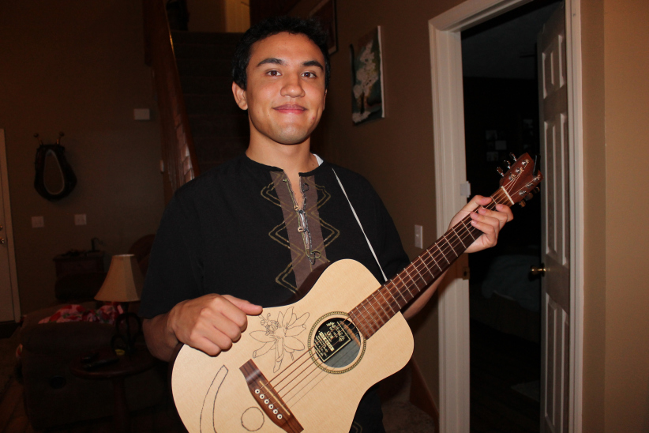

Biological scientist,
education advocate, instructor
musician, graphic artist, and poet.
Current graduate student studying genome evolution among
biotechnologically important fungi. Education advocate aiming
to make science more accessible to the public.